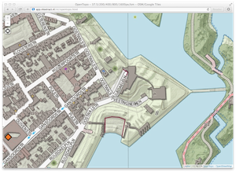
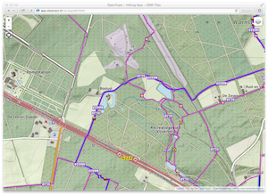
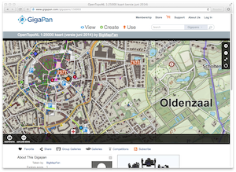

OpenTopo Apps
Deze webapps demonstreren OpenTopo kaartdiensten.
De originele OpenTopo rasters op resoluties 37.5/200/400/800/1600/3200pix/km
zijn zodanig gecombineerd
dat iedere resolutie binnen een schaalgebied zichtbaar wordt. Bovendien zijn de plaatjes "getegeld" (tiled).
De meeste apps zijn mobiel te gebruiken. OpenTopo versie: april 2016.
|

OpenTopo Mobile Map Viewer (OSM) |

OpenTopo Mobile Map Viewer (RD) |
|

De Wandel App (OSM) is een basis map viewer gemaakt met Leaflet met daarin OpenTopo tiles via map5.nl gecombineerd met OSM wandelpaden. Er is GPS-lokatie-ondersteuning zodat je een pad kunt volgen. Maker: Just van den Broecke. |

De KadViewer is een op het Heron viewer framework gebaseerde web-desktop app met daarin OpenTopo via http://map5.nl en veel andere interessante kaartlagen. Mogelijkheid tot kaartlagen over elkaar heen leggen en doorzichtigheid daarbij aan te passen, plus vele andere "tools" bijv tekenen (redlining), WFS queries en upload/download van vector data. Maker: Just van den Broecke. |
|

OpenTopo in Gigapan |
(hier jouw app?) |
Zie verder ook de 3D demos en app.map5.nl. Heb je ook een leuke/mooie app met OpenTopo, laat ons weten.